Generated by scripts/compare_meta_to_benchmark.py.
| run | run_dir | manual_meta | aggregate_rows | |
|---|---|---|---|---|
| 0 | v5-annotation-only | /home/zorro/repos/autonima-results/projects/cue_reactivity/v5-annotation-only | False | all_analyses, all_studies, all_abstract |
No rows.
| manual_name | auto_name | manual_exists | run::v5-annotation-only | |
|---|---|---|---|---|
| 0 | 1_reward_neutral_2020_wbonly | pooled_cue_reactivity | True | True |
| 1 | 2_drug_neutral_2020_wbonly | drug_cue_reactivity | True | True |
| 2 | 3_natural_neutral_2020_wbonly | natural_reward_cue_reactivity | True | True |
Counts are computed from each run's nimads_annotation.json and PMID-linked through nimads_studyset.json. Includes mapped annotations and all* annotations.
| run | manual_name | auto_name | n_analyses | n_unique_pmids | is_mapped | |
|---|---|---|---|---|---|---|
| 0 | v5-annotation-only | 1_reward_neutral_2020_wbonly | pooled_cue_reactivity | 468 | 137 | True |
| 1 | v5-annotation-only | 2_drug_neutral_2020_wbonly | drug_cue_reactivity | 283 | 95 | True |
| 2 | v5-annotation-only | 3_natural_neutral_2020_wbonly | natural_reward_cue_reactivity | 205 | 57 | True |
| 3 | v5-annotation-only | all_abstract | 653 | 145 | False | |
| 4 | v5-annotation-only | all_analyses | 653 | 145 | False | |
| 5 | v5-annotation-only | all_studies | 653 | 145 | False |
| run | v5-annotation-only |
|---|---|
| auto_name | |
| pooled_cue_reactivity | 468 |
| drug_cue_reactivity | 283 |
| natural_reward_cue_reactivity | 205 |
| all_abstract | 653 |
| all_analyses | 653 |
| all_studies | 653 |
| run | v5-annotation-only |
|---|---|
| auto_name | |
| pooled_cue_reactivity | 137 |
| drug_cue_reactivity | 95 |
| natural_reward_cue_reactivity | 57 |
| all_abstract | 145 |
| all_analyses | 145 |
| all_studies | 145 |
| project | annotation | n_analyses | n_unique_pmids | is_dataset_total | annotation_path | studyset_path | |
|---|---|---|---|---|---|---|---|
| 0 | cue_reactivity | 1_reward_neutral_2020 | 275 | 191 | False | /home/zorro/repos/neurometabench/data/nimads/cue_reactivity/merged/nimads_annotation.json | /home/zorro/repos/neurometabench/data/nimads/cue_reactivity/merged/nimads_studyset.json |
| 1 | cue_reactivity | 1_reward_neutral_2020_wbonly | 221 | 160 | False | /home/zorro/repos/neurometabench/data/nimads/cue_reactivity/merged/nimads_annotation.json | /home/zorro/repos/neurometabench/data/nimads/cue_reactivity/merged/nimads_studyset.json |
| 2 | cue_reactivity | 2_drug_neutral_2020 | 165 | 131 | False | /home/zorro/repos/neurometabench/data/nimads/cue_reactivity/merged/nimads_annotation.json | /home/zorro/repos/neurometabench/data/nimads/cue_reactivity/merged/nimads_studyset.json |
| 3 | cue_reactivity | 2_drug_neutral_2020_wbonly | 137 | 113 | False | /home/zorro/repos/neurometabench/data/nimads/cue_reactivity/merged/nimads_annotation.json | /home/zorro/repos/neurometabench/data/nimads/cue_reactivity/merged/nimads_studyset.json |
| 4 | cue_reactivity | 3_natural_neutral_2020 | 110 | 63 | False | /home/zorro/repos/neurometabench/data/nimads/cue_reactivity/merged/nimads_annotation.json | /home/zorro/repos/neurometabench/data/nimads/cue_reactivity/merged/nimads_studyset.json |
| 5 | cue_reactivity | 3_natural_neutral_2020_wbonly | 84 | 50 | False | /home/zorro/repos/neurometabench/data/nimads/cue_reactivity/merged/nimads_annotation.json | /home/zorro/repos/neurometabench/data/nimads/cue_reactivity/merged/nimads_studyset.json |
| 6 | cue_reactivity | __dataset_total__ | 275 | 191 | True | /home/zorro/repos/neurometabench/data/nimads/cue_reactivity/merged/nimads_annotation.json | /home/zorro/repos/neurometabench/data/nimads/cue_reactivity/merged/nimads_studyset.json |
| n_rows | n_cols | dice_mean_full | dice_mean_diagonal | pearson_mean_full | pearson_mean_diagonal | |
|---|---|---|---|---|---|---|
| run | ||||||
| v5-annotation-only | 6 | 3 | 0.596 | 0.702 | 0.788 | 0.875 |
| run | v5-annotation-only |
|---|---|
| auto_name | |
| pooled_cue_reactivity | 0.732 |
| drug_cue_reactivity | 0.660 |
| natural_reward_cue_reactivity | 0.713 |
| run | v5-annotation-only |
|---|---|
| auto_name | |
| pooled_cue_reactivity | 0.897 |
| drug_cue_reactivity | 0.862 |
| natural_reward_cue_reactivity | 0.867 |
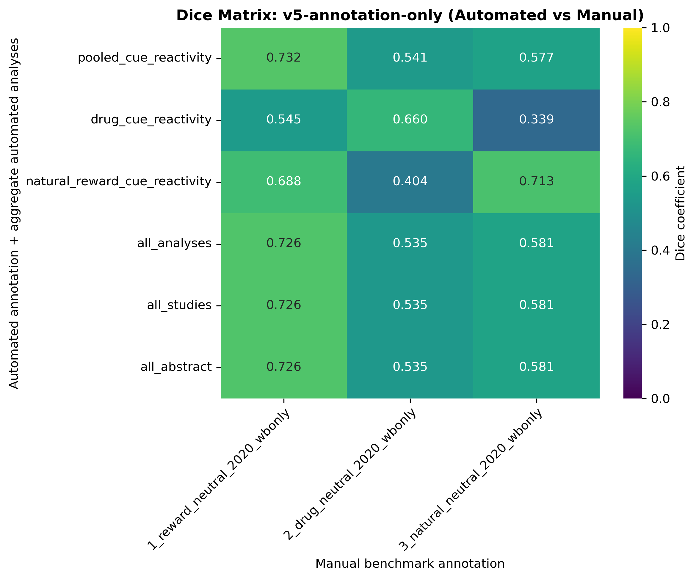
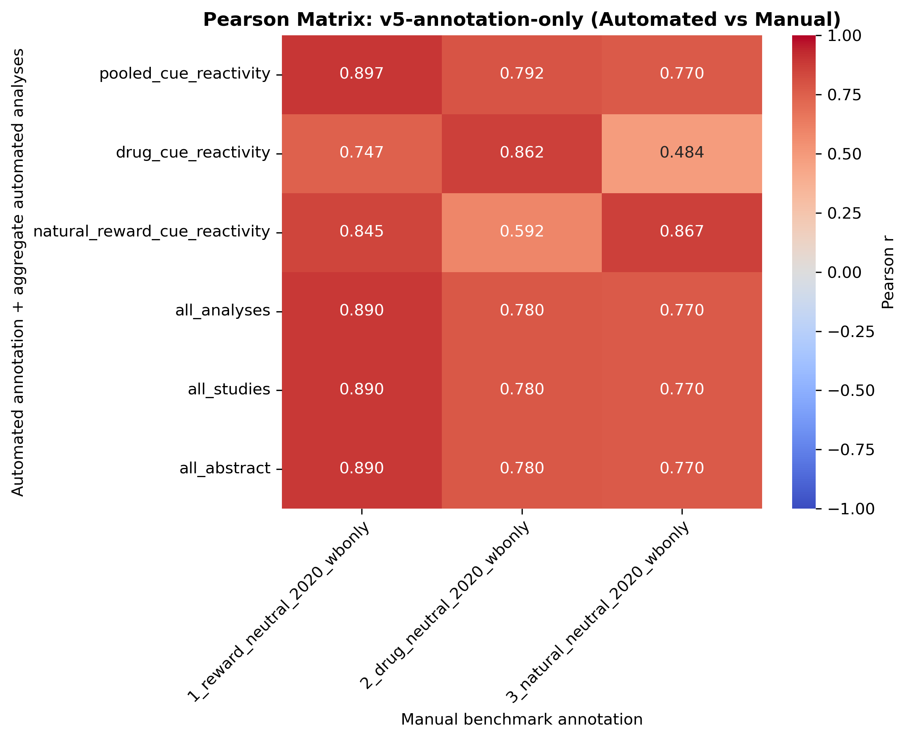
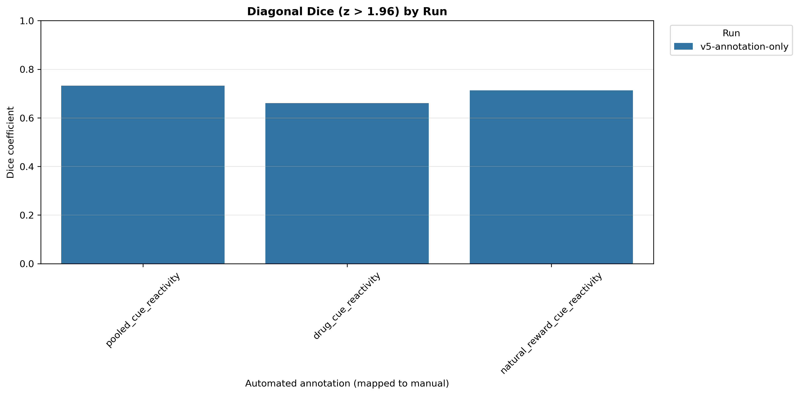
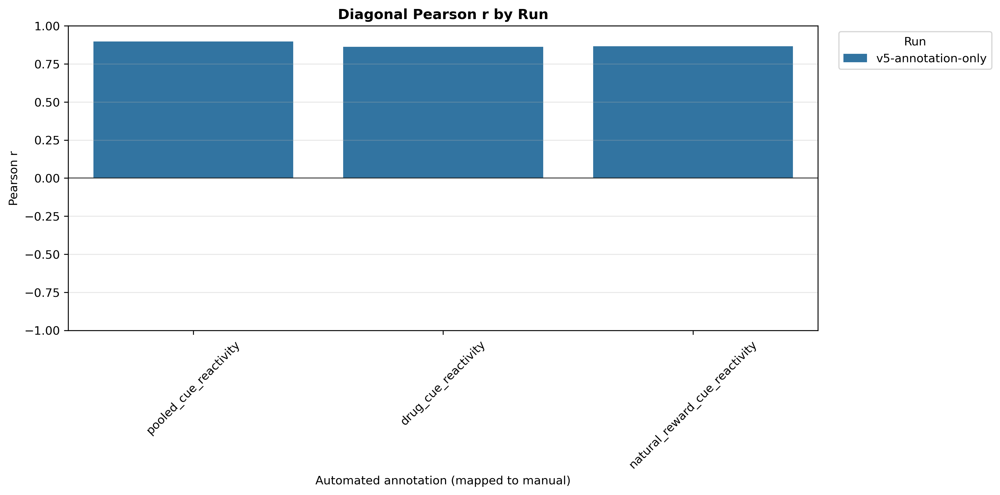
Ordered as manual benchmark first, then each automated run. Includes only all_analyses and mapped custom annotations.
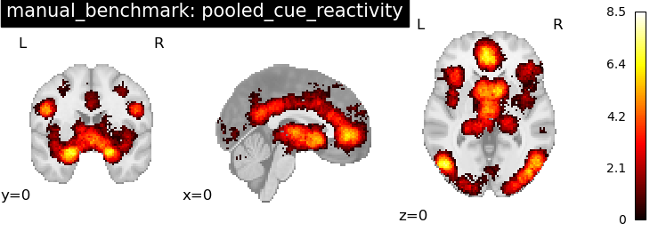
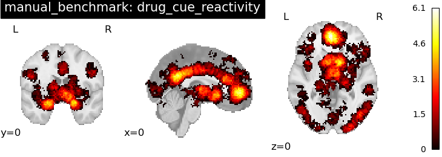
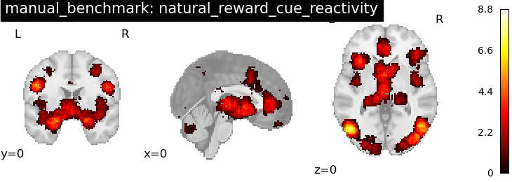
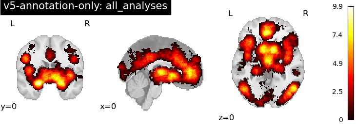
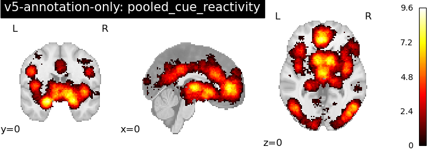
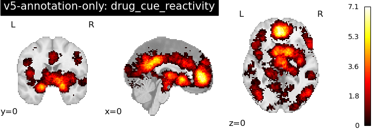
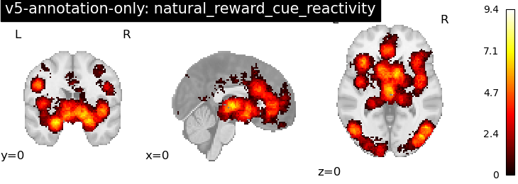